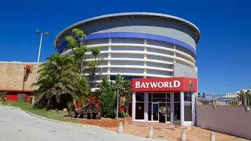

Castle of Good Hope
Darling St & Buitenkant St
Foreshore
Cape Town
8001
+27 21 787 1260
www.castleofgoodhope.co.za

KwaZulu-Natal Museum
237 Jabu Ndlovu Street
Pietermaritzburg
South Africa
+27 33 3451404
+27 33 3450561
www.nmsa.org.za

Port Elizabeth Museum
Beach Road, Humewood
Summerstrand
Port Elizabeth, 6013
+27 41 584 0650
www.bayworld.co.za

East London Museum
319 Oxford St
Belgravia,
East London, 5201
+27 43 743 0686
www.elmuseum.za.org